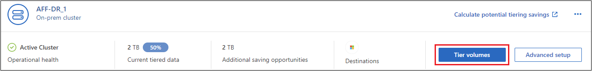
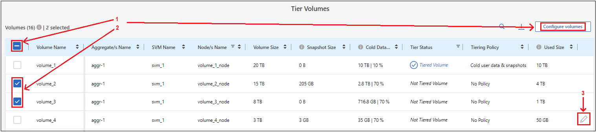
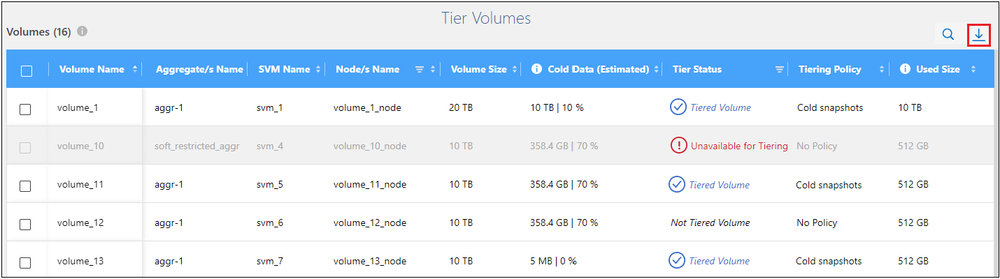
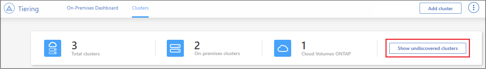
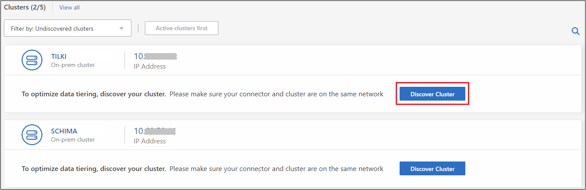

Manos a la obra
Manos a la obra
Gestión de la organización de datos en niveles para sus clústeres
 Sugerir cambios
Sugerir cambios
Ahora que ha configurado la organización en niveles de datos desde los clústeres ONTAP en las instalaciones, puede ordenar los datos de volúmenes adicionales, cambiar la política de organización en niveles de un volumen, detectar clústeres adicionales y mucho más.
Revisión de la información de organización en niveles de un clúster
Puede que desee ver cuántos datos hay en el nivel de cloud y cuántos datos hay en los discos. O bien, puede que desee ver la cantidad de datos activos y inactivos en los discos del clúster. La organización en niveles de BlueXP proporciona esta información para cada clúster.
-
En el menú de navegación de la izquierda, seleccione movilidad > Organización en niveles.
-
En la página Clusters, haz clic en el icono del menú
 Para un clúster y seleccione Información del clúster.
Para un clúster y seleccione Información del clúster.
-
Revise los detalles sobre el clúster.
Veamos un ejemplo:

Tenga en cuenta que la pantalla es diferente para los sistemas Cloud Volumes ONTAP. Si bien Cloud Volumes ONTAP Volumes puede tener datos en niveles en el cloud, no utilizan el servicio de organización en niveles de BlueXP. "Descubre cómo organizar en niveles los datos inactivos desde sistemas Cloud Volumes ONTAP en un almacenamiento de objetos de bajo coste".
También puede hacerlo "Vea la información de organización en niveles de un clúster desde Digital Advisor" Si está familiarizado con este producto de NetApp. Sólo tiene que seleccionar recomendaciones de la nube en el panel de navegación izquierdo.

Organización en niveles de datos de volúmenes adicionales
Configure la organización en niveles de datos para volúmenes adicionales en cualquier momento, por ejemplo, después de crear un nuevo volumen.

|
No es necesario configurar el almacenamiento de objetos porque ya se ha configurado al configurar inicialmente la organización en niveles para el clúster. ONTAP organiza en niveles los datos inactivos de cualquier volumen adicional en el mismo almacén de objetos. |
-
En el menú de navegación de la izquierda, seleccione movilidad > Organización en niveles.
-
En la página Clusters, haga clic en Tier Volumes para el clúster.

-
En la página Tier Volumes, seleccione los volúmenes para los que desea configurar la organización en niveles e inicie la página Tiering Policy:
-
Para seleccionar todos los volúmenes, active la casilla de la fila de título (
 ) Y haga clic en Configurar volúmenes.
) Y haga clic en Configurar volúmenes. -
Para seleccionar varios volúmenes, active la casilla de cada volumen (
 ) Y haga clic en Configurar volúmenes.
) Y haga clic en Configurar volúmenes. -
Para seleccionar un único volumen, haga clic en la fila (o.
 ) para el volumen.
) para el volumen.
-
-
En el cuadro de diálogo Tiering Policy, seleccione una política de organización en niveles, ajuste opcionalmente los días de refrigeración de los volúmenes seleccionados y haga clic en aplicar.

Los volúmenes seleccionados comienzan a organizar los datos en niveles en el cloud.
Cambio de la política de organización en niveles de un volumen
Cambiar la política de organización en niveles de un volumen cambia la forma en que ONTAP organiza los datos inactivos en almacenamiento de objetos. El cambio comienza desde el momento en que se cambia la política. Solo cambia el comportamiento de organización en niveles posterior del volumen: No mueve los datos al nivel de cloud de forma retroactiva.
-
En el menú de navegación de la izquierda, seleccione movilidad > Organización en niveles.
-
En la página Clusters, haga clic en Tier Volumes para el clúster.
-
Haga clic en la fila de un volumen, seleccione una política de organización en niveles, ajuste opcionalmente los días de refrigeración y haga clic en aplicar.
Nota: Si ve opciones para "recuperar datos por niveles", consulte Al migrar datos del nivel de cloud al nivel de rendimiento para obtener más detalles.
La política de organización en niveles se modifica y los datos comienzan a Tiering en función de la nueva política.
Cambio del ancho de banda de red disponible para cargar datos inactivos en el almacenamiento de objetos
Cuando activas la organización en niveles de BlueXP en un clúster, de forma predeterminada, ONTAP puede usar una cantidad ilimitada de ancho de banda para transferir los datos inactivos de los volúmenes del entorno de trabajo al almacenamiento de objetos. Si observa que el tráfico por niveles está afectando a las cargas de trabajo de usuario normales, puede limitar la cantidad de ancho de banda de red que se utiliza durante la transferencia. Puede elegir un valor entre 1 y 10.000 Mbps como velocidad de transferencia máxima.
-
En el menú de navegación de la izquierda, seleccione movilidad > Organización en niveles.
-
En la página Clusters, haz clic en el icono del menú
Para un clúster y seleccione Tasa de transferencia máxima.
-
En la página Velocidad de transferencia máxima, seleccione el botón de opción Limited e introduzca el ancho de banda máximo que se puede utilizar, o seleccione Unlimited para indicar que no hay límite. Luego haga clic en Aplicar.

Esta configuración no afecta al ancho de banda asignado a otros clústeres que sean datos de organización en niveles.
Descargue un informe de organización en niveles para los volúmenes
Es posible descargar un informe de la página Tier Volumes para revisar el estado de organización en niveles de todos los volúmenes en los clústeres que se están gestionando. Simplemente haga clic en el  botón. La organización en niveles de BlueXP genera un archivo .CSV que se puede revisar y enviar a otros grupos según sea necesario. El archivo .CSV incluye hasta 10,000 filas de datos.
botón. La organización en niveles de BlueXP genera un archivo .CSV que se puede revisar y enviar a otros grupos según sea necesario. El archivo .CSV incluye hasta 10,000 filas de datos.

Al migrar datos del nivel de cloud al nivel de rendimiento
Los datos organizados en niveles a los que se accede desde el cloud pueden volver a calentarse y moverse de nuevo al nivel de rendimiento. No obstante, si desea promocionar datos de forma proactiva en el nivel de rendimiento desde el nivel de cloud, puede hacerlo en el cuadro de diálogo Tiering Policy. Esta función está disponible cuando se utiliza ONTAP 9.8 y versiones posteriores.
Puede hacerlo si desea dejar de usar la organización en niveles de un volumen, o si decide conservar todos los datos de usuario en el nivel de rendimiento, pero mantener las copias Snapshot en el nivel de cloud.
Existen dos opciones:
| Opción | Descripción | Afecta a la política de organización en niveles |
|---|---|---|
Recupere todos los datos |
Recupera todos los datos de volúmenes y las copias de Snapshot por niveles en el cloud y las promociona al nivel de rendimiento. |
La política de organización en niveles ha cambiado a "no hay ninguna política". |
Recuperar el sistema de archivos activo |
Recupera solo los datos del sistema de archivos activos organizados en niveles en el cloud y los promociona al nivel de rendimiento (las copias Snapshot permanecen en el cloud). |
La política de organización en niveles ha cambiado a "instantáneas frías". |

|
Puede que su proveedor de cloud le cargue en función de la cantidad de datos que se transfieren fuera del cloud. |
Asegúrese de tener suficiente espacio en el nivel de rendimiento para todos los datos que se vuelven a mover desde el cloud.
-
En el menú de navegación de la izquierda, seleccione movilidad > Organización en niveles.
-
En la página Clusters, haga clic en Tier Volumes para el clúster.
-
Haga clic en la
Para el volumen, elija la opción de recuperación que desee utilizar y haga clic en aplicar.
La política de organización en niveles cambia y los datos organizados en niveles comienzan a migrarse de nuevo al nivel de rendimiento. En función de la cantidad de datos que se encuentren en el cloud, el proceso de transferencia podría tardar algún tiempo.
Gestión de la configuración de organización en niveles en agregados
Cada agregado de sus sistemas ONTAP en las instalaciones tiene dos configuraciones que puede ajustar: El umbral de ocupación de la organización en niveles y si la función de generación de informes de datos inactivos está habilitada.
- Umbral de ocupación de la organización en niveles
-
Si se establece el umbral en un número menor, se reduce la cantidad de datos necesarios para almacenar en el nivel de rendimiento antes de que se lleve a cabo la organización en niveles. Esto puede ser útil para agregados de gran tamaño que contienen pocos datos activos.
Si se establece el umbral en un número mayor, se aumenta la cantidad de datos necesarios para almacenar en el nivel de rendimiento antes de que se lleve a cabo la organización en niveles. Esto puede resultar útil para soluciones diseñadas para realizar niveles solo cuando los agregados están cerca de la capacidad máxima.
- Generación de informes de datos inactivos
-
La generación de informes de datos inactivos (IDR) utiliza un periodo de enfriamiento de 31 días para determinar qué datos se consideran inactivos. La cantidad de datos inactivos organizados en niveles depende de las políticas de organización en niveles establecidas en volúmenes. Esta cantidad puede ser diferente de la cantidad de datos fríos detectados por IDR utilizando un período de enfriamiento de 31 días.
Es mejor mantener activado IDR porque ayuda a identificar sus oportunidades de ahorro y datos inactivos. El IDR debe seguir activado si se habilitó la organización en niveles de datos en un agregado.
-
En la página Clusters, haga clic en Configuración avanzada para el clúster seleccionado.

-
En la página Configuración avanzada, haga clic en el icono de menú del agregado y seleccione Modificar agregado.

-
En el cuadro de diálogo que se muestra, modifique el umbral de ocupación y elija si habilitar o deshabilitar la generación de informes de datos inactivos.

-
Haga clic en aplicar.
Reparación de la salud operativa
Los fallos pueden producirse. Cuando lo hacen, la organización en niveles de BlueXP muestra un estado operativo «Error» en la consola de clúster. La salud refleja el estado del sistema ONTAP y BlueXP.
-
Identifique los clústeres con un estado operativo de "error".
-
Pase el ratón sobre el icono informativo "i" para ver el motivo del fallo.
-
Corrija el problema:
-
Compruebe que el clúster de ONTAP esté operativo y que tenga una conexión entrante y saliente con el proveedor de almacenamiento de objetos.
-
Compruebe que BlueXP tenga conexiones salientes con el servicio de organización en niveles de BlueXP, con el almacén de objetos y con los clústeres de ONTAP que detecta.
-
Detecta clústeres adicionales de la organización en niveles de BlueXP
Puede añadir sus clústeres de ONTAP en las instalaciones sin detectar a BlueXP desde la página Tiering Cluster para que pueda habilitar la organización en niveles para el clúster.
Tenga en cuenta que los botones también aparecen en la página Tiering on-Prem Dashboard para que pueda detectar clústeres adicionales.
-
Desde la organización en niveles de BlueXP, haz clic en la pestaña Clusters.
-
Para ver cualquier clúster no descubierto, haga clic en Mostrar clústeres no detectados.

Si sus credenciales de NSS se guardan en BlueXP, los clústeres de su cuenta se mostrarán en la lista.
Si sus credenciales de NSS no están guardadas en BlueXP, se le solicitará que añada sus credenciales antes de ver los clústeres sin detectar.

-
Haga clic en Discover Cluster para el clúster que desea administrar a través de BlueXP e implemente la organización en niveles de datos.
-
En la página Cluster Details, introduzca la contraseña de la cuenta de usuario administrador y haga clic en Discover.
Tenga en cuenta que la dirección IP de gestión del clúster se rellena en función de la información de la cuenta de NSS.
-
En la página Details & Credentials el nombre del clúster se añade como el Nombre del entorno de trabajo, por lo que solo tiene que hacer clic en Go.
BlueXP detecta el clúster y lo agrega a un entorno de trabajo en el lienzo utilizando el nombre del clúster como nombre del entorno de trabajo.
En el panel derecho puede habilitar el servicio de organización en niveles u otros servicios para este clúster.
Busca un clúster en todos los conectores de BlueXP
Si utiliza varios conectores para gestionar todo el almacenamiento del entorno, es posible que algunos clústeres en los que desee implementar la organización en niveles estén en otro conector. Si no estás seguro de qué Connector gestiona un determinado clúster, puedes buscar en todos los conectores mediante la organización en niveles de BlueXP.
-
En la barra de menús de la organización en niveles de BlueXP, haga clic en el menú de acciones y seleccione Buscar clúster en todos los conectores.

-
En el cuadro de diálogo Buscar mostrado, introduzca el nombre del clúster y haga clic en Buscar.
La organización en niveles de BlueXP muestra el nombre del conector si es capaz de encontrar el clúster.
-
"Cambie al conector y configure la organización en niveles del clúster".